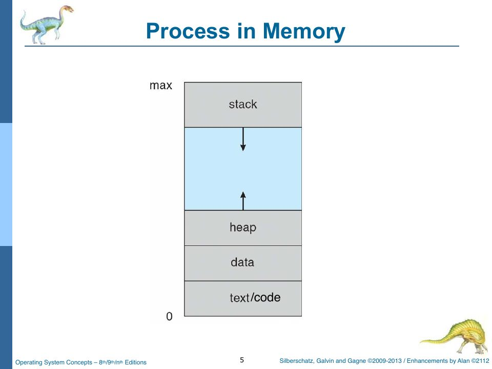
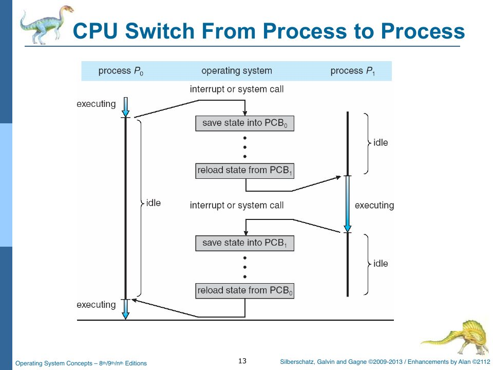
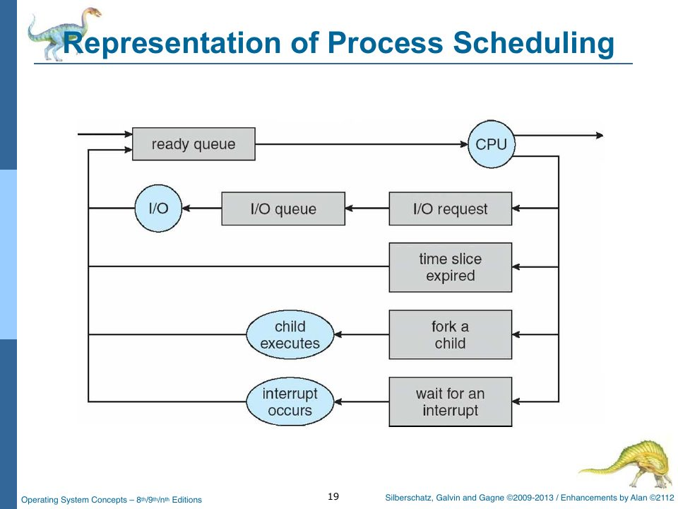

Processes and the PCB
Slides: Chapter 3, “Processes,” pp. 165–221. Project Part Two.
With the machine and the console working, the OS can finally do the thing operating systems are for: run programs. This chapter is about the abstraction that makes that possible, the process, and the data structure that represents one, the process control block.
Program versus process
“A program is a passive entity stored on disk (executable image); a process is active” (slide p. 168). The program is the recipe; the process is the cooking. One program can be several processes at once: load the same hex three times and you get three processes, PIDs 0, 1, and 2, each with its own memory, registers, and progress.
A process in memory has four parts (slide p. 167): the text (code), the data section (globals), the heap (dynamically allocated memory), and the stack (function parameters, return addresses, locals).

A 6502a process in rObSen has only two of the four: text and data, mixed together in one 256-byte partition. The sample program in Chapter 5 keeps its variables at $50–$61, right after its code, and nothing distinguishes them from instructions except that the PC never goes there. There’s no stack because the 6502a subset has no push, pop, or subroutine call; there’s no heap because there’s no allocator. (A program that writes over its own code is perfectly legal, and occasionally done on purpose.)
Process states
The course’s state machine (slide p. 187) is:
- NEW: op codes are in the host (the input box). No PCB yet.
loadcreates the PCB → RESIDENT: op codes loaded into a memory segment “but dormant.”run <pid>→ READY: in memory, waiting for the CPU.- scheduler dispatch → RUNNING; an interrupt sends it back to READY.
- BRK, halt, or kill → TERMINATED: “memory available for reuse.”
There’s no waiting state, because 6502a programs never wait for I/O: system calls complete instantly.
rObSen’s PCB declares the states it actually uses:
export type ProcessState = "New" | "Ready" | "Running" | "Terminated";
export type ProcessLocation = "Memory" | "Disk";
There is no "Resident". A loaded process goes straight to Ready and onto the ready queue, so the ready queue doubles as the resident list. The project spec allows this (“These can be combined if you label it carefully”). "New" exists but is held only for the instant between new PCB(…) and markReady(). Chapter 9a explains the type … = "New" | "Ready" | … syntax.
The process control block
“Data associated with each process” (slide p. 175): process state, process ID, program counter, CPU registers, CPU-scheduling information, memory-management information (including protection), accounting information, and I/O status information. Here is rObSen’s:
export class PCB {
public pc: number;
public ir: number;
public acc: number;
public xReg: number;
public yReg: number;
public zFlag: number;
public state: ProcessState;
public priority: number;
public quantumRemaining: number;
public segment: number;
public arrivalCycle: number;
public firstRunCycle: number | null;
public completionCycle: number | null;
public waitCycles: number;
public turnaroundCycles: number;
public lastStateChangeCycle: number;
public location: ProcessLocation;
public swapKey: string | null;
constructor(
public readonly pid: number,
public base: number,
public limit: number,
public readonly size: number,
segment: number,
priority: number = 0,
) {
this.state = "New";
this.pc = 0;
this.ir = 0;
this.acc = 0;
this.xReg = 0;
this.yReg = 0;
this.zFlag = 0;
this.priority = priority;
this.quantumRemaining = this.defaultQuantum();
this.segment = segment;
this.arrivalCycle = _CpuCycleCount;
this.firstRunCycle = null;
this.completionCycle = null;
this.waitCycles = 0;
this.turnaroundCycles = 0;
this.lastStateChangeCycle = _CpuCycleCount;
this.location = "Memory";
this.swapKey = null;
}
Grouped by the slide’s categories:
| Slide category | rObSen fields |
|---|---|
| Process state | state |
| Process ID | pid (readonly) |
| Program counter, CPU registers | pc, ir, acc, xReg, yReg, zFlag |
| CPU scheduling information | priority, quantumRemaining |
| Memory management (and protection) | base, limit, segment, size; location and swapKey for swapping |
| Accounting | arrivalCycle, firstRunCycle, completionCycle, waitCycles, turnaroundCycles, lastStateChangeCycle |
| I/O status | none (rObSen processes do no I/O beyond printing) |
The state-change methods keep the accounting honest:
public markReady(): void {
if (this.state === "Running") {
this.quantumRemaining = this.defaultQuantum();
}
this.state = "Ready";
this.lastStateChangeCycle = _CpuCycleCount;
}
public markRunning(): void {
if (this.state === "Ready") {
this.waitCycles += _CpuCycleCount - this.lastStateChangeCycle;
}
this.state = "Running";
this.quantumRemaining = this.defaultQuantum();
if (this.firstRunCycle === null) {
this.firstRunCycle = _CpuCycleCount;
}
this.lastStateChangeCycle = _CpuCycleCount;
}
public markTerminated(): void {
if (this.state === "Ready") {
this.waitCycles += _CpuCycleCount - this.lastStateChangeCycle;
}
this.state = "Terminated";
this.quantumRemaining = 0;
this.completionCycle = _CpuCycleCount;
this.updateTurnaround();
this.lastStateChangeCycle = _CpuCycleCount;
}
Every transition stamps lastStateChangeCycle with the current CPU cycle count. When a process leaves Ready (to run, or to die), the time it spent there is added to waitCycles. When it terminates, turnaroundCycles becomes completionCycle − arrivalCycle. That’s exactly the slide definitions (Chapter 5, p. 284): turnaround is “the interval from process submission to process completion,” and waiting time is “total amount of time a process spent waiting in the ready queue.” Project Part Three requires both, measured in CPU cycles, and the panels and ps display them live.

Creating a process: load
In rObSen a process is born when you type load:
public shellLoad(args: string[]): void {
const textArea = document.getElementById(
"taProgramInput",
) as HTMLTextAreaElement | null;
if (!textArea) {
_StdOut.putText("Error: program input area not found.");
return;
}
if (_CPU.isExecuting) {
_StdOut.putText(
"Error: cannot load new code while the CPU is executing.",
);
return;
}
if (!_MemoryManager) {
_StdOut.putText("Error: memory manager is not initialized.");
return;
}
const rawInput = textArea.value ?? "";
const trimmedInput = rawInput.trim();
if (trimmedInput.length === 0) {
_StdOut.putText("Error: no input to load.");
return;
}
const hexAndSpaceOnly = /^[0-9A-Fa-f\s]+$/;
if (!hexAndSpaceOnly.test(trimmedInput)) {
_StdOut.putText(
"Error: invalid character(s). Only hexadecimal bytes separated by whitespace are allowed.",
);
return;
}
const tokens = trimmedInput.split(/\s+/).filter(Boolean);
const bytes: number[] = [];
for (const token of tokens) {
if (token.length !== 2) {
_StdOut.putText(
"Error: each byte must be exactly two hexadecimal characters.",
);
return;
}
const value = parseInt(token, 16);
if (Number.isNaN(value)) {
_StdOut.putText(`Error: unable to parse byte '${token}'.`);
return;
}
bytes.push(value & 0xff);
}
if (bytes.length === 0) {
_StdOut.putText("Error: no executable bytes were provided.");
return;
}
if (bytes.length > _Memory.size()) {
const availableBytes = _Memory.size();
_StdOut.putText(
`Error: program is too large. Available memory supports ${availableBytes} bytes.`,
);
return;
}
this.collectTerminatedProcesses();
const prospectivePid = _PidCounter;
let allocation = _MemoryManager.allocate(prospectivePid, bytes.length);
if (!allocation) {
const victim = this.findSwappableProcess();
if (victim && _Swapper?.rollOut(victim)) {
allocation = _MemoryManager.allocate(prospectivePid, bytes.length);
}
}
if (!allocation) {
_StdOut.putText("Error: insufficient memory (swap failed).");
return;
}
_MemoryManager.load(allocation, bytes);
const pid = _PidCounter++;
const pcb = new PCB(
pid,
allocation.base,
allocation.limit,
allocation.size,
allocation.partition,
);
pcb.markReady();
pcb.placeInMemory();
_ProcessTable.set(pid, pcb);
if (_ReadyQueue) {
_ReadyQueue.enqueue(pcb);
pcb.noteEnqueued();
}
_CurrentProcess = null;
const hexBase = allocation.base.toString(16).padStart(4, "0");
_StdOut.putText(
`Process ${pid} loaded at 0x${hexBase} (${bytes.length} byte${bytes.length === 1 ? "" : "s"}).`,
);
Control.hostUpdateDisplays();
}
Step by step:
- Find the input and refuse if the CPU is busy. Loading while executing would race with the running process’s memory accesses (and the accessor would translate the loader’s addresses; see Chapter 4).
- Validate (Project Part One): the text must be only hex digits and whitespace, every token must be exactly two characters, and the program must fit in memory. (It checks against all 768 bytes, not one 256-byte partition. A 300-byte program passes this check and then fails to find a partition, so the error message is “insufficient memory” rather than “too large.” Worse, see the callout below.)
- Reap dead processes:
collectTerminatedProcessesfrees memory still held by any terminated process. - Allocate a partition from the memory manager. If none is free, swap a process out to disk to make room (Chapter 17).
- Copy the bytes in (
MemoryManager.loadalso zero-fills the rest of the partition). - Assign a PID.
_PidCounter++means PIDs only ever increase and are never reused, as the spec requires: “Do not reset PIDs as they are used. The PID value should always increase.” - Build the PCB, mark it ready, record that it’s in memory, add it to the process table (
_ProcessTable, aMapfrom PID to PCB), and enqueue it on the ready queue. - Report the PID and load address.
allocate fails (no partition holds 300 bytes), so step 4 assumes memory is full and rolls PID 0 out to disk, then tries again, fails again, and reports "insufficient memory (swap failed)." PID 0 is now on disk for no reason, even though partition 2 was free the whole time. The size check in step 2 should compare against the partition size (256), so the swap is only attempted when it could help.
fork() copies the calling process, and exec() replaces the copy's memory with a new program. Windows does both in one call, CreateProcess(). Every UNIX process except the first has a parent, which can wait() for it. rObSen's load is closest to exec without the fork: the shell (which isn't a process) loads a program image into fresh memory. There are no parent/child relationships, and therefore no process tree.
Running a process: run <pid>
public shellRun(args: string[]): void {
if (!args || args.length === 0) {
_StdOut.putText("Usage: run <pid>");
return;
}
const pid = parseInt(args[0], 10);
if (Number.isNaN(pid)) {
_StdOut.putText("Error: PID must be a decimal number.");
return;
}
if (_CPU.isExecuting) {
_StdOut.putText("Error: the CPU is already executing a process.");
return;
}
_RunAllMode = false;
const runResult = _Kernel.krnRunProcessByPid(pid);
if (!runResult.success) {
_StdOut.putText(runResult.message);
return;
}
_StdOut.putText(`Process ${pid} is now running.`);
Control.hostUpdateDisplays();
}
The shell validates the PID, makes sure the CPU isn’t busy, and asks the kernel:
public krnRunProcessByPid(
pid: number,
): { success: boolean; message?: string } {
const pcb = _ProcessTable.get(pid);
if (!pcb) {
return { success: false, message: `Error: PID ${pid} was not found.` };
}
if (pcb.state === "Terminated") {
return {
success: false,
message: `Error: PID ${pid} is not resident in memory.`,
};
}
pcb.resetCpuState();
pcb.markReady();
this.enterKernelMode("Run PID");
this.dispatchProcess(pcb);
return { success: true };
}
The kernel resets the PCB’s saved registers to zero (so a process always starts at logical address 0), marks it ready, and dispatches it: the dispatcher copies the PCB’s registers into the CPU and sets isExecuting. Chapter 13 reads dispatchProcess closely. From that moment, each clock tick runs one of its instructions.
Ending a process
A process ends in one of three ways: it executes BRK (00); someone kills it (kill <pid>, killall, Ctrl-C); or it crashes (an invalid opcode, a missing operand). The normal path is krnCompleteCurrentProcess, called by the CPU’s BRK handler:
public krnCompleteCurrentProcess(accValue: number): void {
if (!_CurrentProcess) {
return;
}
const completedProcess = _CurrentProcess;
const pid = completedProcess.pid;
this.terminateProcess(completedProcess);
_StdOut.advanceLine();
_StdOut.putText(`Process ${pid} completed.`);
_StdOut.advanceLine();
_StdOut.putText(`ACC = ${(accValue & 0xff).toString(10)}`);
_StdOut.advanceLine();
Control.hostUpdateDisplays();
if (_RunAllMode && _ReadyQueue && _ReadyQueue.getSize() > 0) {
const nextResult = this.krnRunAll();
if (!nextResult.success) {
_RunAllMode = false;
_OsShell.putPrompt();
}
return;
}
_RunAllMode = false;
_OsShell.putPrompt();
}
and every path that ends a process cleanly goes through terminateProcess:
private terminateProcess(pcb: TSOS.PCB): void {
const pid = pcb.pid;
pcb.markTerminated();
if (pcb.location === "Memory") {
_MemoryManager?.releaseByPid(pid);
} else {
_krnDiskDriver?.releaseSwapImage(pcb.swapKey);
}
_ReadyQueue?.remove((queued: TSOS.PCB) => queued.pid === pid);
_ProcessTable.delete(pid);
if (_CurrentProcess && _CurrentProcess.pid === pid) {
_CurrentProcess = null;
}
if (!_CurrentProcess) {
_SchedulerCounter = _SchedulerQuantum;
this.exitToUserMode();
}
}
Mark it terminated (stamping the accounting fields), release its memory (or its swap image, if it’s on disk), take it off the ready queue, delete it from the process table, and if it was the running process, clear _CurrentProcess.
Zombies
“A zombie process is a process that has completed execution… but still has an entry in the process table” (slide p. 194). In UNIX, a child’s entry lingers after exit so that its parent can collect the exit status with wait(); once collected, the zombie is “reaped.” The project spec warns that killing the running process “should not create a zombie.”
rObSen avoids zombies by deleting the PCB from the process table at once. The cost is that the exit status (the final accumulator) survives only as the line printed on the console; ps can never show a finished process. A UNIX-faithful design would keep terminated PCBs until something reads their status.
One path does not go through terminateProcess: an invalid opcode calls markTerminated directly and then traps. That leaves a PCB in the table with its partition still allocated, which is a zombie. It’s mostly academic, since the trap shuts the OS down, but it’s why shellLoad begins by reaping: collectTerminatedProcesses releases anything in the Terminated state.
Queues and schedulers
“Processes migrate among the various queues” (slide p. 181): the job (resident) queue of everything in the system, the ready queue of processes in memory and ready to run, and device queues of processes waiting on I/O. 
rObSen has a process table (_ProcessTable) playing the role of the job queue and a ready queue (_ReadyQueue); it needs no device queues.
The long-term scheduler decides which jobs to admit into memory, controlling the degree of multiprogramming; the short-term scheduler picks which ready process runs next (slides pp. 184–185). In rObSen, you are the long-term scheduler: you decide what to load. The swapper (Chapter 17) adds a medium-term scheduler, which the textbook describes as removing processes from memory to reduce the degree of multiprogramming and bringing them back later.
Interprocess communication
The rest of Chapter 3 covers how cooperating processes communicate (slides pp. 206–220): shared memory versus message passing; direct communication (naming the other process) versus indirect (mailboxes, ports); Mach’s message-based kernel; Windows’ local procedure calls; sockets; and remote procedure calls with their client and server stubs.
rObSen processes can’t communicate at all: each one is sealed inside its 256 bytes, and the memory accessor folds every address back into its own partition (Chapter 4). That’s perfect isolation, and no cooperation. Adding a shared-memory segment would be an interesting extension. You’d map, say, logical $F0–$FF of every process to one shared physical region. And as soon as you did, two processes could both read, add, and write the same byte, which is exactly the race condition Chapter 19 opens with.
Check yourself
- Load the same program three times, then
run 1. Which partition’s code runs, and what are processes 0 and 2 doing meanwhile? - Why does
krnRunProcessByPidcallpcb.resetCpuState()? What would go wrong without it? - A process is loaded at cycle 100, first runs at cycle 130, waits in the ready queue for another 40 cycles in total while others run, and completes at cycle 200. What are its turnaround and waiting times?
Answers
- Partition 1’s (base
$0100). Processes 0 and 2 sit in the ready queue in stateReady.rundispatches only the one process, and outsiderunallmode the timer ISR doesn’t switch away from it, so they stay ready until you run them. - A process that had been partly run (for example, interrupted by Ctrl-C during an earlier
runall, if it survived) would resume mid-program with stale registers. Resetting makesrunmean “start from the beginning.” It’s also why the saved PC must be logical (Chapter 4): zero means the start of the process’s own partition. - Turnaround = 200 − 100 = 100 cycles. Waiting = 30 (before first run) + 40 = 70 cycles.